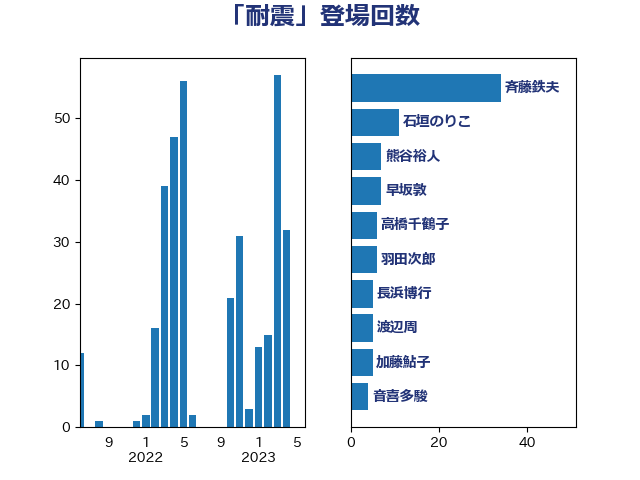

単語「耐震」

| 斉藤鉄夫 | 公明党 | 34 回 |
| 石垣のりこ | 立憲民主党 | 11 回 |
| 熊谷裕人 | 立憲民主党 | 7 回 |
| 早坂敦 | 日本維新の会 | 7 回 |
| 高橋千鶴子 | 日本共産党 | 6 回 |
| 羽田次郎 | 立憲民主党 | 6 回 |
| 長浜博行 | 無所属 | 5 回 |
| 渡辺周 | 立憲民主党 | 5 回 |
| 加藤鮎子 | 自由民主党 | 5 回 |
| 音喜多駿 | 日本維新の会 | 4 回 |
| 林芳正 | 自由民主党 | 4 回 |
| 朝日健太郎 | 自由民主党 | 4 回 |
| 宮本岳志 | 日本共産党 | 4 回 |
| 務台俊介 | 自由民主党 | 4 回 |
| 野田国義 | 立憲民主党 | 3 回 |
| 竹内真二 | 公明党 | 3 回 |
| 石井苗子 | 日本維新の会 | 3 回 |
| 石井正弘 | 自由民主党 | 3 回 |
| 盛山正仁 | 自由民主党 | 3 回 |
| 岩本剛人 | 自由民主党 | 3 回 |
| 小宮山泰子 | 立憲民主党 | 3 回 |
| 佐藤正久 | 自由民主党 | 3 回 |
| 三浦信祐 | 公明党 | 3 回 |
| 足立敏之 | 自由民主党 | 2 回 |
| 赤木正幸 | 日本維新の会 | 2 回 |
| 西村康稔 | 自由民主党 | 2 回 |
| 萩生田光一 | 自由民主党 | 2 回 |
| 芳賀道也 | 国民民主党 | 2 回 |
| 笠井亮 | 日本共産党 | 2 回 |
| 空本誠喜 | 日本維新の会 | 2 回 |
| 福島伸享 | 無所属 | 2 回 |
| 浜田靖一 | 自由民主党 | 2 回 |
| 浜口誠 | 国民民主党 | 2 回 |
| 平沼正二郎 | 自由民主党 | 2 回 |
| 小野泰輔 | 日本維新の会 | 2 回 |
| 宮崎雅夫 | 自由民主党 | 2 回 |
| 安江伸夫 | 公明党 | 2 回 |
| 齋藤健 | 自由民主党 | 1 回 |
| 鈴木敦 | 国民民主党 | 1 回 |
| 鈴木憲和 | 自由民主党 | 1 回 |
| 鈴木俊一 | 自由民主党 | 1 回 |
| 遠藤良太 | 日本維新の会 | 1 回 |
| 谷公一 | 自由民主党 | 1 回 |
| 荒井優 | 立憲民主党 | 1 回 |
| 篠原孝 | 立憲民主党 | 1 回 |
| 穀田恵二 | 日本共産党 | 1 回 |
| 稲津久 | 公明党 | 1 回 |
| 白石洋一 | 立憲民主党 | 1 回 |
| 田中健 | 国民民主党 | 1 回 |
| 片山さつき | 自由民主党 | 1 回 |
| 浅川義治 | 日本維新の会 | 1 回 |
| 永岡桂子 | 自由民主党 | 1 回 |
| 水岡俊一 | 立憲民主党 | 1 回 |
| 武部新 | 自由民主党 | 1 回 |
| 櫛渕万里 | れいわ新選組 | 1 回 |
| 森屋隆 | 立憲民主党 | 1 回 |
| 柳ヶ瀬裕文 | 日本維新の会 | 1 回 |
| 後藤茂之 | 自由民主党 | 1 回 |
| 川田龍平 | 立憲民主党 | 1 回 |
| 岬麻紀 | 日本維新の会 | 1 回 |
| 山本佐知子 | 自由民主党 | 1 回 |
| 小里泰弘 | 自由民主党 | 1 回 |
| 小熊慎司 | 立憲民主党 | 1 回 |
| 小森卓郎 | 自由民主党 | 1 回 |
| 室井邦彦 | 日本維新の会 | 1 回 |
| 奥下剛光 | 日本維新の会 | 1 回 |
| 大塚拓 | 自由民主党 | 1 回 |
| 堀場幸子 | 日本維新の会 | 1 回 |
| 國場幸之助 | 自由民主党 | 1 回 |
| 和田政宗 | 自由民主党 | 1 回 |
| 古川元久 | 国民民主党 | 1 回 |
| 井上哲士 | 日本共産党 | 1 回 |
| 五十嵐清 | 自由民主党 | 1 回 |
| 中根一幸 | 自由民主党 | 1 回 |
| 中川宏昌 | 公明党 | 1 回 |
| 下野六太 | 公明党 | 1 回 |
| 三木圭恵 | 日本維新の会 | 1 回 |